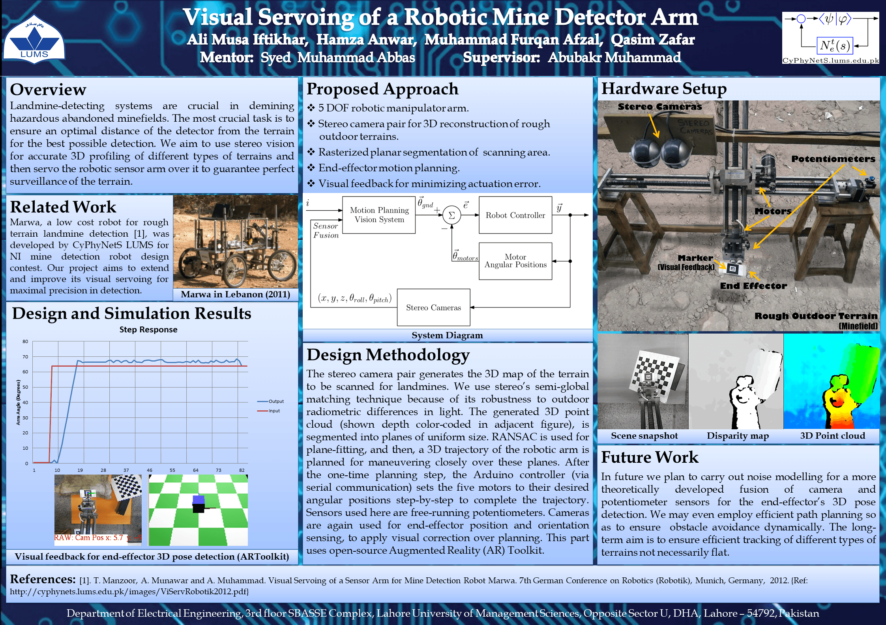
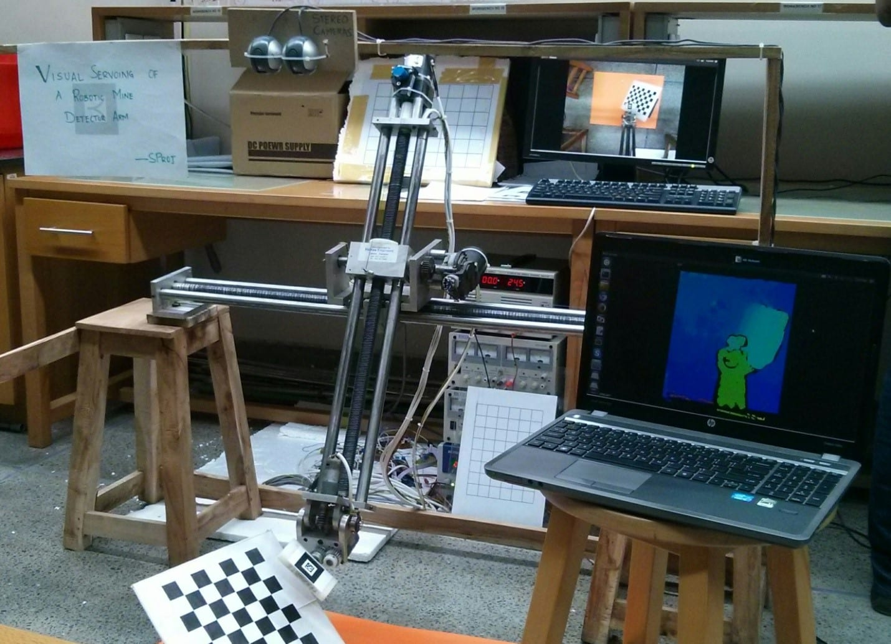
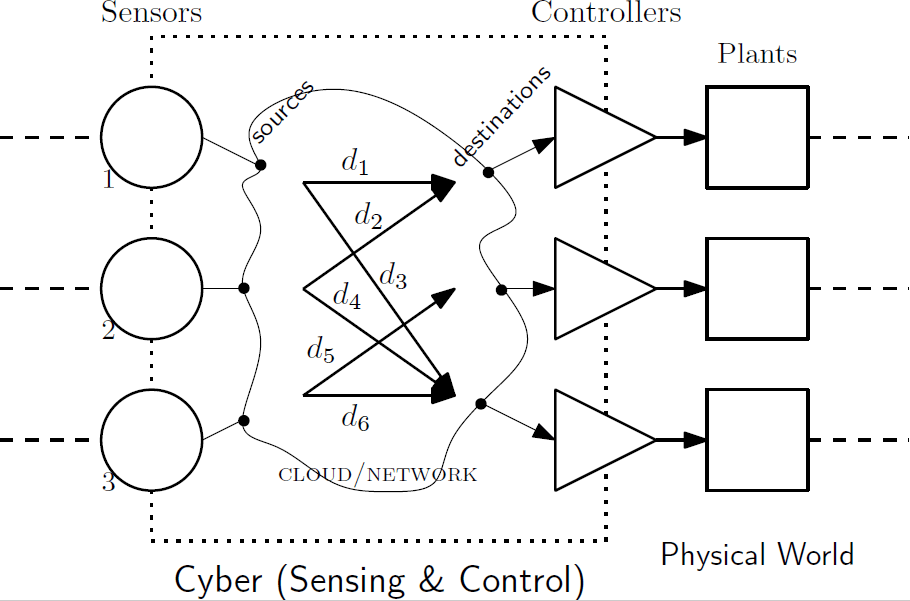

Technical Specialist (R&T, Cummins)
Ohio State | NYU | LUMS | Falah Seminary (OH)
hmza.anwr@gmail.com
Current:
Past Affiliations:
Advanced Coursework:
Research Interests:
Current Project:
Automotive Control:
Robotics:
Landmine detection systems are crucial in demining hazardous abandoned minefields. The most crucial task is to ensure an optimal distance of the detector from the terrain: this is a hard problem because essentially a demining system has two major constraints; firstly to keep the end effector closest to the ground for high accuracy of detection, and secondly, to keep it far enough to prevent collision with the ground while scanning. Dealing with the second constraint is much more complex due to the inclusion of sensor noise and actuator uncertainties, which introduce a significant amount of variability in the motion of the arm. The bounds on the errors present an ill-posed research problem that must be tackled with. We aim to use a low cost stereo camera pair for 3D profiling of the terrain, and then servo the robotic sensor arm with a calculated precision when hovering over the terrain. [video]
Two dimensional control of a metallic plate for balancing of a ball involving visual sensing through webcam. MATLAB and Simulink used for image processing and real-time feedback control.
Machine Learning:
Systems and Control:
Prevalent advances in ‘Internet of Things’ (IoT) has offered interaction of cyber-physical systems for sensing and actuation tasks over the Internet. Cloud computational capabilities have even enhanced such cutting-edge technologies scaling up to critical remote sensing and actuation tasks such as tele-operation, mobile robotics and traffic regulation, promising the future of smart living in smart cities. Internet serves as the communication backbone for these networked systems entailing the advantages of simplicity of use, cost-affordability, unmatched availability and cloud power. The network and control relationship is a core dimension in the design of networked systems and recent trends are in developing co-design solutions to, for instance, the network congestion control scheme and the feedback system’s control law design. But, the Internet use for such time-critical systems brings its devils along: packet losses, time-varying time-delays, delay variations and unpredictability of network dynamics. Network analysis are mathematically complex and a natural game-theoretic framework underpins the whole IoT control scheme design problem. We intend to develop a stable congestion control mechanism in Internet-like networks involving dynamic cyber-physical systems under cooperative game-theoretic framework.
{kind=link}